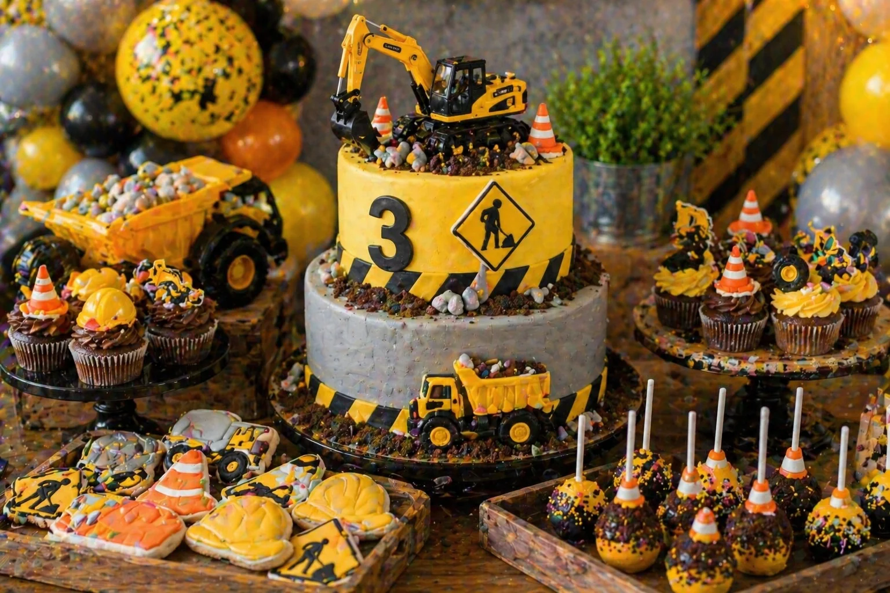
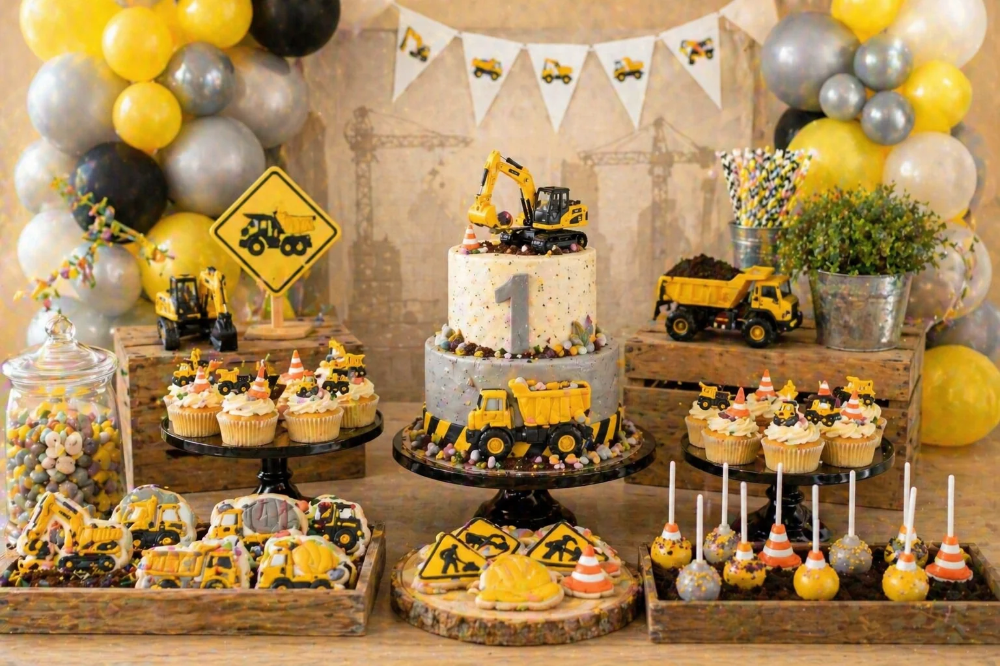

A construction party is a bold, playful and energetic theme for a children's birthday celebration. With yellow and black balloon garlands, a digger birthday cake, traffic cone cupcakes, road sign cookies, chocolate dirt details and toy truck props, the dessert table can become the main feature of the party.
At Little Moment Studio, our focus is balloon styling and celebration setups. We do not make cakes or cupcakes ourselves, but we know how important the dessert table is to the overall party look. This guide covers construction party inspiration — colour palettes, balloon ideas, three styling approaches and sweet treat ideas that work beautifully together.
If you would like cupcakes or a cake to complement your balloon display, we are happy to recommend a trusted local cake maker.
Why Construction Parties Are So Popular
Construction parties work brilliantly for young children because the theme is immediately recognisable, colourful and full of energy. Diggers, dump trucks, traffic cones and road signs are all things children see and love in everyday life — and translating those details into a birthday table feels exciting and personal.
| Element | Construction Party Inspiration |
|---|---|
| Balloon garland | Yellow, black, grey, orange, silver and beige |
| Cake | Digger cake, dump truck cake or chocolate dirt construction site cake |
| Cupcakes | Traffic cone cupcakes, digger topper cupcakes or chocolate dirt cupcakes |
| Cookies | Road signs, hard hats, diggers, trucks, cones and tools |
| Cake pops | Traffic cones, rocks, yellow and black pops or dirt-style pops |
| Backdrop | Construction zone, concrete wall, road stripes or digger scene |
| Props | Toy diggers, dump trucks, traffic cones, wooden crates and tool details |
| Table styling | Black stands, rustic wood, chocolate crumbs and yellow accents |
The best construction tables feel bold and exciting without becoming cluttered. A few strong toy vehicle props and some chocolate crumb "dirt" do most of the heavy lifting — the balloon garland and themed cake carry the rest of the visual weight.
Construction Party Colour Palettes
Start with the colour palette before choosing the balloons, cake or sweet treats. Construction yellow should be the dominant colour in the display — it is what makes the theme instantly recognisable. Then balance it with two or three supporting tones.
Classic Construction
Yellow, black, grey and orange. Bold, bright and instantly recognisable.
Soft First Birthday
Beige, grey, cream and yellow. Warm and gentle for younger children.
Modern Construction
Mustard, charcoal, silver and white. Sophisticated and on-trend.
Rustic Construction
Wood brown, beige, yellow and grey. Earthy with construction character.
Idea 1: Classic Construction Dessert Table
A classic construction dessert table is bold, bright and immediately understood. Yellow, black, grey and orange styling with diggers, road signs, hard hat cookies and chocolate dirt details creates a display that feels like a real construction zone — the kind that children instantly want to explore. This is the strongest all-round direction because the theme is unmistakably clear from the moment guests arrive.
| Element | Classic Construction Table Idea |
|---|---|
| Balloon garland | Yellow as the dominant colour with black, grey and orange accents |
| Backdrop | Construction zone panel, caution stripe detail or concrete-effect backdrop |
| Cake | Digger birthday cake with chocolate dirt crumbs and toy excavator topper |
| Cupcakes | Traffic cone cupcakes and chocolate dirt cupcakes on a black cake stand |
| Cookies | Road signs, hard hats, diggers and traffic cones |
| Cake pops | Traffic cone pops and yellow and black pops grouped in a wooden crate |
| Props | Toy diggers, dump trucks, traffic cones and chocolate crumb "dirt" |
| Sweet jars | Yellow and black sweets in small jars on either side of the cake stand |
Chocolate crumb "dirt" is one of the easiest and most effective construction party details — a scattering of crushed biscuit or chocolate cake crumbs around the base of the cake stand or inside small wooden crates immediately reinforces the construction site feel without any extra preparation.
Balloon tip
For a construction party garland, yellow should make up around half the balloons. Balance it with grey and charcoal rather than too much black — an entirely black-and-yellow garland can feel stark rather than celebratory. Orange accent balloons add warmth and break up the contrast, while silver or metallic filler balloons give the display a polished, premium quality without introducing a new colour to the palette.
Idea 2: Construction Cake & Cupcake Display

Construction cake and cupcake display styled by Little Moment Studio, Sittingbourne — digger cake, traffic cone cupcakes, hard hat cookies and chocolate dirt crumbs
A construction cake and cupcake display gives the birthday cake the starring role. A digger cake with chocolate dirt crumbs, a toy excavator topper and yellow and grey detailing becomes the centrepiece, with traffic cone and hard hat cupcakes grouped around it to reinforce the theme. Road sign and truck cookies at the base of the stand fill the remaining space without overwhelming the display.
| Element | Cake Display Idea |
|---|---|
| Cake | Digger cake with chocolate dirt crumbs and toy excavator or truck topper |
| Cupcakes | Traffic cone cupcakes and chocolate dirt cupcakes on a tiered stand |
| Cookies | Road sign and hard hat cookies at the base of the cake stand |
| Cake pops | Traffic cone pops or grey rubble pops grouped on a small display |
| Cake stand | Black or dark wood stand for contrast against the yellow |
| Balloon garland | Yellow, black and grey garland above the table |
| Props | Toy digger and dump truck beside the stand with chocolate crumb "dirt" |
Good construction cupcake styles for a tiered display:
| Cupcake Style | Best For |
|---|---|
| Traffic cone cupcakes | Strong, clear construction detail |
| Chocolate dirt cupcakes | Easy and very effective — crushed biscuit on buttercream |
| Digger topper cupcakes | Toy or fondant digger pressed into smooth yellow buttercream |
| Hard hat cupcakes | Fondant or sugar hard hat topper on yellow or grey buttercream |
| Yellow swirl cupcakes | Easy filler cupcakes that repeat the main palette |
| Grey rock cupcakes | Rubble or concrete effect using grey buttercream |
For more cupcake ideas, see our birthday cupcake ideas guide.
Idea 3: Soft First Birthday Construction Table

Soft first birthday construction table — yellow, grey and beige with wooden crates, digger cake and rustic styling
A softer construction table works beautifully for a first birthday or younger child's party. Replacing the bold black with beige and cream keeps the digger and construction vehicle details clearly in place while making the table feel warmer, more premium and more gentle. Yellow remains the hero colour, but the overall effect is far less stark than a fully black-and-yellow display.
| Element | Soft First Birthday Construction Idea |
|---|---|
| Balloon garland | Yellow, beige and grey with cream filler — no black |
| Backdrop | Natural linen or soft neutral backdrop with subtle digger details |
| Cake | Digger cake with number one topper and soft yellow detailing |
| Cupcakes | Soft yellow swirl cupcakes and cream construction cupcakes |
| Cookies | Road sign and traffic cone cookies in beige and yellow icing |
| Cake pops | Soft yellow and cream traffic cone pops |
| Props | Wooden crates, toy diggers and rustic cake stands |
| Table runner | Natural linen or hessian with yellow and beige tones |
Styling tip
For a first birthday construction table, wooden crates are one of the most useful props. Stack two crates at slightly different heights to one side of the cake stand, then fill them with a toy digger, a small packet of chocolate crumb "dirt" and a couple of traffic cone cake pops. This creates a natural height variation without a tiered stand, and the rustic wood texture anchors the table in the earthy, construction palette.
Idea 4: Digger & Dump Truck Table
A digger and dump truck table leans fully into the construction vehicle theme. Toy diggers and dump trucks become the key props — a dump truck filled with wrapped sweets, popcorn or chocolate rocks adds an interactive element that children enjoy. The cake can be a dump truck shape or a construction site with multiple toy vehicles on top. Yellow and grey balloons with black accents create the right backdrop, and chocolate rock treats and biscuit crumb dirt scattered across wooden trays reinforce the excavation scene.
Idea 5: Chocolate Dirt & Road Sign Treat Table
A treat-focused construction table skips the large centrepiece cake in favour of a spread of themed sweet details. Chocolate dirt cups, brownie rubble pieces, road sign cookies, traffic cone cake pops, hard hat cookies and yellow swirl cupcakes arranged across wooden crates and black trays create a layered display that feels full of construction personality. This works well for smaller parties where a large tiered cake is not needed, and the treat variety keeps the table visually interesting from every angle.
What to Include on a Construction Dessert Table
A construction dessert table can be as simple or as full as the party requires. Start with the digger cake and cupcakes, then add cookies, cake pops and treat details to build out the display. Toy props fill the remaining visual space without adding more food than guests can eat.
| Treat | Construction Party Idea |
|---|---|
| Birthday cake | Digger cake, dump truck cake, construction site cake or chocolate dirt cake |
| Cupcakes | Traffic cones, chocolate dirt, digger toppers, hard hats or yellow swirls |
| Cookies | Road signs, trucks, diggers, hard hats, cones and number cookies |
| Cake pops | Traffic cones, grey rocks, yellow and black pops or dirt-style pops |
| Brownies | Rubble-style brownie pieces in a wooden crate or black tray |
| Sweet jars | Yellow, black, grey or orange sweets in small jars |
| Popcorn cups | Construction snack cups in yellow and grey tones |
| Chocolate dirt pots | Small pots of crushed biscuit with a toy digger or cone topper |
For practical advice on arranging the table layout, see our guide to how to style a dessert table for a children's party. For help coordinating the sweet treats with your balloon palette, see our guide on how to match cupcakes with your balloon display.
Construction Party Cupcake Ideas
Cupcakes are ideal for construction parties because the individual details — a piped traffic cone, a chocolate crumb top, a fondant hard hat — can repeat the construction theme consistently across the whole display. Mixing two or three different cupcake styles on a tiered stand keeps the display visually varied while staying clearly within the same theme.
| Cupcake Style | Best For |
|---|---|
| Traffic cone cupcakes | The clearest single construction detail — orange with white stripe |
| Chocolate dirt cupcakes | Crushed biscuit or chocolate crumb on brown or grey buttercream |
| Digger topper cupcakes | Small toy or fondant digger pressed into smooth yellow buttercream |
| Hard hat cupcakes | Fondant or sugar hard hat topper — yellow or orange on grey buttercream |
| Yellow swirl cupcakes | Easy filler cupcakes that repeat the construction yellow |
| Grey rock cupcakes | Rubble and concrete effect using grey or charcoal buttercream |
| Tool topper cupcakes | Small fondant spanner, hammer or brick on a smooth base |
| Black and yellow cupcakes | Caution stripe detail for a bold construction zone look |
Useful piping tips for construction party cupcakes:
| Effect | Tip |
|---|---|
| Tall swirl | Wilton 1M open star |
| Rosette swirl | Wilton 2D closed star |
| Dirt and grass texture | Wilton 233 grass tip |
| Smooth dome for toppers | Wilton 1A large round |
| Small dots and details | Wilton 3, 4 or 12 round tip |
For a fuller guide to piping tips and techniques, see our best piping tips for cupcakes guide.
Construction Party Balloon Ideas
The balloon display creates most of the visual impact around the dessert table. For a construction party, yellow should be the dominant colour — it is what makes the theme immediately legible. Balance it with grey and charcoal rather than relying too heavily on black, which can make the display feel stark rather than celebratory.
| Theme | Balloon Colours |
|---|---|
| Classic construction | Yellow, black, grey and orange |
| Soft first birthday | Yellow, beige, cream and grey — no black |
| Digger party | Yellow, black, silver and white |
| Modern construction | Mustard, charcoal, silver and white |
| Rustic construction | Yellow, beige, wood brown and grey |
| Bright birthday | Yellow, orange, black and silver |
For balloon packages and availability across Sittingbourne and Kent, see our birthday balloon styling page and balloon garlands page.
Matching Balloons, Cake & Cupcakes
The sweet treats do not need to match the balloons exactly — they just need to feel like part of the same colour story. Pick three to five colours and repeat them consistently across every element for a cohesive, well-considered result.
| Balloon Palette | Cake & Cupcake Idea |
|---|---|
| Yellow, black, grey | Digger cake, traffic cone cupcakes, road sign cookies |
| Beige, grey, yellow | Soft first birthday construction cake and cream cupcakes |
| Orange, black, yellow | Cone cake pops, road sign cookies, chocolate dirt cupcakes |
| Mustard, charcoal, silver | Modern construction cake with metallic styling |
| Brown, beige, yellow | Rustic digger cake, chocolate dirt treats and wooden crate styling |
For more advice on coordinating colours across the whole celebration, see our guide to how to choose a colour palette for your balloon display.
Your Questions Answered
What colours work best for a construction party?
Yellow, black, grey and orange are the classic construction party palette and make the theme immediately recognisable. Construction yellow should be the dominant colour — present in the balloons, cake and cupcakes — with black and grey used to balance it. Orange accents add warmth and reinforce the site-safety feel. For a softer first birthday version, replace the black with beige and cream to keep the digger details without the harsh contrast. For a more modern look, mustard, charcoal and silver create a sophisticated construction palette.
What balloons should I use for a construction party?
A yellow, black and grey balloon garland is the most recognisable construction party combination. Yellow should make up around half the balloons, with black and grey as supporting tones. Orange accent balloons add warmth, while silver filler balloons give the garland a premium metallic quality. For a first birthday construction party, a softer garland of yellow, beige, cream and grey feels warm and child-friendly without the stark contrast of a fully black-and-yellow display.
What cupcakes work well for a construction party?
Traffic cone cupcakes and chocolate dirt cupcakes are the most effective construction party choices because they make the theme clear immediately. Traffic cone cupcakes are piped with orange buttercream and finished with a small white stripe detail. Chocolate dirt cupcakes use crushed biscuit or chocolate crumb on top of brown or grey buttercream for a simple rubble effect. Digger topper cupcakes — a toy or fondant digger pressed into smooth yellow buttercream — are an easy option that children love. See our best piping tips guide for technique detail.
What should I include on a construction party dessert table?
A strong construction party dessert table includes a digger or construction site birthday cake as the centrepiece, twelve to twenty-four themed cupcakes, road sign and hard hat cookies, traffic cone cake pops, chocolate dirt pots and yellow and black sweet jars. Toy diggers and dump trucks are the key props — placed beside and around the cake stand, they communicate the construction theme immediately. A yellow, black and grey balloon garland framing the backdrop creates most of the visual impact.
Can a construction party work for a first birthday?
Yes — a softened construction theme works very well for a first birthday. Use yellow, beige, cream and grey instead of bold black and yellow, and keep props minimal. A digger cake with a number one topper, soft yellow and cream cupcakes, road sign cookies and a yellow and beige balloon garland create a table with clear construction character without being too stark or overwhelming. See our first birthday balloon ideas guide for more inspiration.
Whether you choose the bold classic approach with yellow, black and grey, a construction cake and cupcake centrepiece with traffic cone and dirt details, or a softer first birthday version in yellow and beige, the key to a great construction party table is keeping the colour palette consistent. When the balloons, cake, cupcakes, cookies and props all share the same construction colour language, the whole display feels like a single coordinated scene.
For more children's party inspiration, see our guides to dinosaur party balloon and dessert table ideas, farm party balloon and dessert table ideas and how to style a dessert table for a children's party.
Planning a Construction Party in Sittingbourne or Kent?
Little Moment Studio creates beautiful balloon displays and celebration setups for children's birthdays across Sittingbourne and Kent. We can also recommend a trusted local cake maker to complete your construction party dessert table.